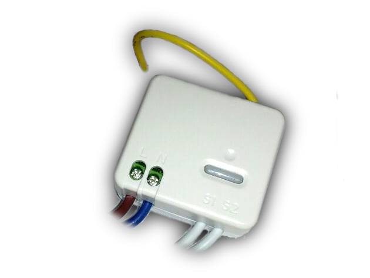
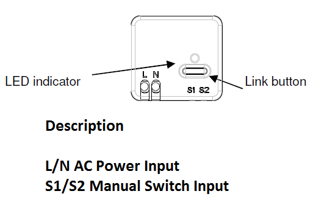

EVR_HAC01
Firmware Version : 2.0 |
 |
Quick StartSThis device is a Z-Wave Sensor. Tripple click the link button to include or exclude the device. Alternativly use auto-inclusion to include by powering up the device. Clicking the link button will wake up the device and keep it awake. Please refer to the chapters below for detailed information about all aspects of the products usage. |
Product description
Installation Guidelines

The Relay Insert can be installed into the in-wall power box, the power cord have to be connected to the main AC power, the manual switch input cable is wired to normal NO (open) / NC (close) button or switch. When the wiring connection is completed, please follow the instruction to operate the Inclusion and Association process to finish HAC01's connection and network setting with controlled device.
Behavior within the Z-Wave network
I On factory default the device does not belong to any Z-Wave network. The device needs to join an existing wireless network to communicate with the devices of this network. This process is called Inclusion. Devices can also leave a network. This process is called Exclusion. Both processes are initiated by the primary controller of the Z-Wave network. This controller will be turned into exclusion respective inclusion mode. Please refer to your primary controllers manual on how to turn your controller into inclusion or exclusion mode. Only if the primary controller is in inclusion or exclusion mode, this device can join or leave the network. Leaving the network - i.e. being excluded - sets the device back to factory default.
If the device already belongs to a network, follow the exclusion process before including it in your network. Otherwise inclusion of this device will fail. If the controller being included was a primary controller, it has to be reset first.
Make sure that your Z-Wave Controller is in the Inclusion-/Exclusion-Mode. Click the link button fast three times to confirm the process. Alternativly use auto-inclusion to include by powering up the device. Auto inclusion lasts for 4 minute or until the execution of inclusion is completed.
Operating the device
By using the connected 2 wire manual switch the module will send the correspond signal to the associated Z-Wave devices (ON/OFF or dimmer module).
Node Information Frame
NI The Node Information Frame is the business card of a Z-Wave device. It contains information about the device type and the technical capabilities. The inclusion and exclusion of the device is confirmed by sending out a Node Information Frame. Beside this it may be needed for certain network operations to send out a Node Information Frame.
Tripple click on the link button sends a Node Information Frame.
Associations
A Z-Wave devices control other Z-Wave devices. The relationship between one device controlling another device is called association. In order to control a different device, the controlling device needs to maintain a list of devices that will receive controlling commands. These lists are called association groups and they are always related to certain events (e.g. button pressed, sensor triggers, ...). In case the event happens all devices stored in the respective association group will receive a common wireless command.
Association Groups:
| 1 | by switch input (changing status) sends Basic Set Command to the nodes in Grouping 1 (max. nodes in group: 5) |
Configuration Parameters
Z-Wave products are supposed to work out of the box after inclusion, however certain configuration can adapt the function better to user needs or unlock further enhanced features.
IMPORTANT: Controllers may only allow to configure signed values. In order to set values in the range 128 … 255 the value sent in the application shall be the desired value minus 256. For example: to set a parameter to 200 it may be needed to set a value of 200 minus 256 = minus 56. In case of two byte value the same logic applies: Values greater than 32768 may needed to be given as negative values too.
| Value | Description |
|---|---|
| 0 | Off |
| 1 — 99 | On (binary switch device); dim level (multilevel switch device) (Default 99) |
| Value | Description |
|---|---|
| 0 | immediately Off |
| 1 — 127 | delay 1 ~ 127 second to Off (Default 1) |
Technical Data
| Explorer Frame Support | Yes |
| SDK | 4.54 pl1 |
| Device Type | Slave with routing capabilities |
| Generic Device Class | Remote Switch |
| Specific Device Class | Binary Remote Switch |
| Routing | Yes |
| FLiRS | No |
| Firmware Version | 2.0 |